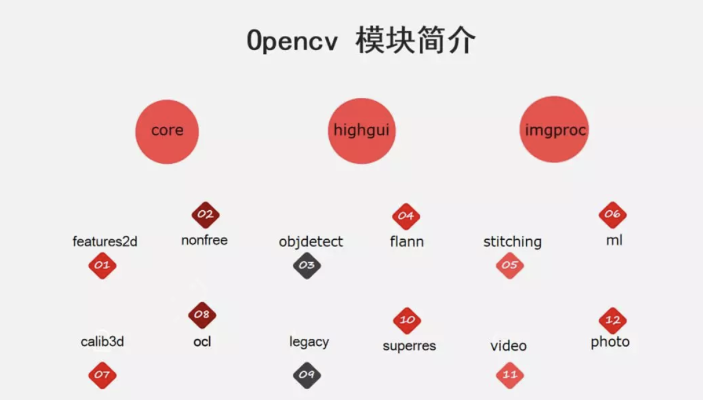

OpenCV的模块
学习目标
- 了解OpenCV的主要模块
1 OpenCV的模块
下图列出了OpenCV中包含的各个模块：

其中core、highgui、imgproc是最基础的模块，该课程主要是围绕这几个模块展开的，分别介绍如下：
- core模块实现了最核心的数据结构及其基本运算，如绘图函数、数组操作相关函数等。
- highgui模块实现了视频与图像的读取、显示、存储等接口。
- imgproc模块实现了图像处理的基础方法，包括图像滤波、图像的几何变换、平滑、阈值分割、形态学处理、边缘检测、目标检测、运动分析和对象跟踪等。
对于图像处理其他更高层次的方向及应用，OpenCV也有相关的模块实现
- features2d模块用于提取图像特征以及特征匹配，nonfree模块实现了一些专利算法，如sift特征。
- objdetect模块实现了一些目标检测的功能，经典的基于Haar、LBP特征的人脸检测，基于HOG的行人、汽车等目标检测，分类器使用Cascade Classification（级联分类）和Latent SVM等。
- stitching模块实现了图像拼接功能。
- FLANN模块（Fast Library for Approximate Nearest Neighbors），包含快速近似最近邻搜索FLANN 和聚类Clustering算法。
- ml模块机器学习模块（SVM，决策树，Boosting等等）。
- photo模块包含图像修复和图像去噪两部分。
- video模块针对视频处理，如背景分离，前景检测、对象跟踪等。
- calib3d模块即Calibration（校准）3D，这个模块主要是相机校准和三维重建相关的内容。包含了基本的多视角几何算法，单个立体摄像头标定，物体姿态估计，立体相似性算法，3D信息的重建等等。
- G-API模块包含超高效的图像处理pipeline引擎
总结
OpenCV 的模块
core：最核心的数据结构
highgui：视频与图像的读取、显示、存储
imgproc：图像处理的基础方法
features2d：图像特征以及特征匹配